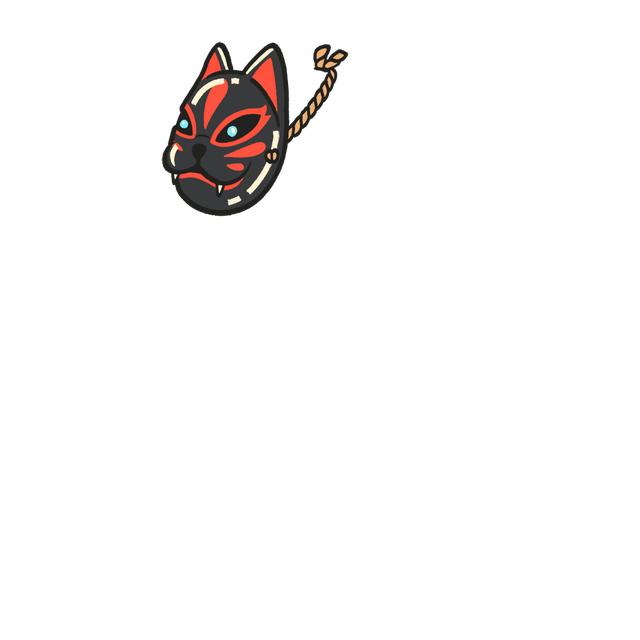

The Mirror · Hat
Your hat keeps +2 HYP · +1 POW. Only the picture changes.



Nothing is destroyed. The piece stays on, keeps its stats and stays in your Backpack.
Dust comes from melting gear. You have 19 spare pieces worth 857 at the Salvage Bench.